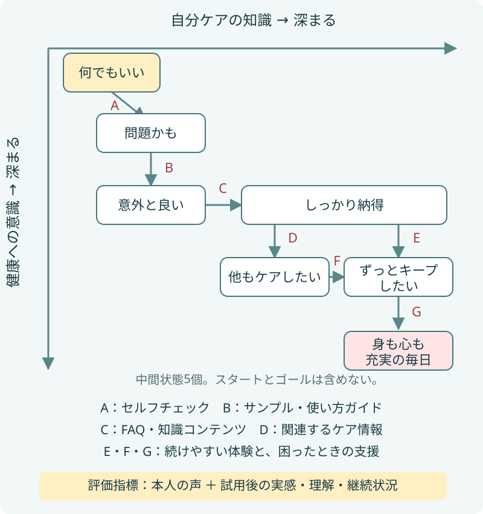

公式の基準ページ / 清水 誠
コンセプトダイアグラムとは｜目的・8つの構成要素・CJMとの違い
30秒でわかるコンセプトダイアグラム
コンセプトダイアグラムは、顧客の心理・態度の変化を2つの軸で図解し、その変化を促す体験・施策と評価指標を結びつける図解手法です。
企業の都合で施策を並べるのではなく、顧客がどの状態からどのような変化を経て、顧客と企業の双方にとって望ましいゴールへ向かうのかを一枚の図で整理します。顧客理解、施策設計、効果測定を同じ構造でつなげられることが特徴です。
清水 誠が、1990年代後半に情報アーキテクトが用いていた図解手法を、データによる事業評価、顧客理解、マーケティング、CRMへつなげる形に再構成し、2008年から提唱しています。
図で見ると、何がわかる？
架空のヘアケア事業で考えてみます。商品を買ってもらうまでを描くなら、「広告を見る→サイトを訪問する→購入する」で済むかもしれません。でも、それだけでは、買った人が何を感じ、使い続けることで何がよくなるのかは分かりません。
スマートフォンでは図を横にスクロールして読めます。

この図のスタートは「何でもいい」、ゴールは「身も心も充実の毎日」です。その間に、次のような変化を想定しています。
- 2つの軸：「自分ケアの知識」と「健康への意識」。知識があっても面倒なら続かず、健康を大切にしたくても選び方が分からなければ迷う。この2つが深まると、望ましい暮らしへ近づけると考えます。
- 箱：「問題かも」「意外と良い」「しっかり納得」など、顧客の心理・態度の状態を表します。「サイトを訪問する」「購入する」という行動とは区別します。
- 矢印と施策：「問題かも」から「意外と良い」へ変わるために、無理なく試せる機会を用意する。「意外と良い」から「しっかり納得」へ変わるために、理由や選び方を説明する。施策を、支えたい変化に対応づけます。
- 評価指標：試した人の実感、理解、続けたい理由、継続状況などを組み合わせ、想定した変化が起きているか確かめます。図を描いただけで、顧客の気持ちが分かったことにはなりません。
すべての人が同じ経路をたどるとは限りません。この作例では「しっかり納得」から、今のケアを続けたい人と、他のセルフケアにも関心が広がる人の経路を分けています。違いがあるなら、企業が用意する支援も変わるはずです。作例を詳しく読みたい場合は、ヘアケア事業の完成サンプルを参照してください。
何のために使うのか
図がきれいにできたかより、顧客について何が分かり、提供する体験をどう変えられるかが大切です。次のような場面で使えます。
部門ごとに違う「顧客像」を、確かめられる仮説にする
マーケティングは「商品を知らない」、営業は「価格で迷っている」、サポートは「使い方が分からない」と考えているかもしれません。図へ置いてみると、同じ顧客を違う状態として捉えているのか、そもそも違う人を見ているのかを議論できます。
たとえば「意外と良い」と感じた人が続けない理由は、知識不足なのか、費用や手間なのか。意見の多数決で決めず、本人の声や利用状況で確かめ、説明を増やすべきか、続けやすい体験へ変えるべきかを判断します。
施策の抜けや偏りを見つけ、必要な支援を考える
広告と購入への案内は多いのに、使い始めた人への支援が少ない。FAQは充実しているのに、試す機会がない。実施中の施策を矢印へ置くと、支えている変化と、手薄な変化を見比べられます。
ヘアケアの例なら、「問題かも」と思った人へ知識記事を追加するだけでよいのか。それとも、試し方や負担を減らす支援が必要なのか。新しい施策を増やす前に、顧客が進めない理由を考えられます。
レポートの数字を、顧客に起きた変化へ結びつける
閲覧やクリックが増えても、納得して使い続けられる人が増えたとは限りません。FAQを何度も読んでいるのは、理解が深まったからではなく、分からなくて困っているからかもしれません。
「何を測れるか」からではなく、「どの変化が分かれば改善を判断できるか」から指標を考えます。行動データに、本人が感じた価値や困りごとを合わせると、数字を増やすことだけで終わらない分析につながります。
公式の必須8項目
現在の公式ルールでは、次の8項目を定義します。先ほどの作例を対応させると、それぞれの役割が分かります。
| 必須項目 | 定義 | ヘアケア事業の例 |
|---|---|---|
| 1. 対象顧客 | この図で心理・態度変容を考える顧客の範囲 | 情報不足や手間を理由に、ヘアケアを後回しにしている成人男性 |
| 2. スタート | 対象顧客の初期の心理・態度状態 | 何でもいい |
| 3. ゴール | 顧客と企業の双方にとって望ましい、持続的な到達状態 | 身も心も充実の毎日。自分に合うケアを理解し、無理なく続けられる状態 |
| 4. 2つの心理軸 | ゴール到達につながる、顧客視点の異なる心理的要因 | 自分ケアの知識／健康への意識 |
| 5. 顧客状態 | 軸の深まりに応じた中間の心理・態度状態 | 問題かも、意外と良い、しっかり納得、他もケアしたい、ずっとキープしたい |
| 6. 状態変化 | 顧客状態間の変化、分岐、統合を示す矢印 | 意外と良い → しっかり納得。体験の実感に、理由の理解が加わる |
| 7. 施策 | 状態変化を促す企業側のコミュニケーション | 試せるサンプル、使い方ガイド、根拠と限界を示すFAQ |
| 8. 評価指標 | 顧客状態や状態変化を観測し、施策を評価・改善するための指標 | 試用後の実感、理解度、続けたい理由、継続状況など |
過去の資料で「ステップ」「箱」と呼んでいたものは、現在は原則として「顧客状態」と呼びます。吹き出し、行動例、色、アイコン、具体的なペルソナなどは、理解や議論を助ける補助表現です。
中間の顧客状態は、スタートとゴールを除く5〜6個を実務上の目安にします。標準構造の理論上限は7個ですが、必須項目の8個や作図の手順数とは別の数です。旧資料との関係、補助表現との区別は構成要素のFAQ、状態数の根拠は顧客状態数のFAQで説明しています。
カスタマージャーニーマップとの違い
どちらも顧客理解と体験・施策の設計に使えます。違いは、主に図を組み立てるときの中心となる整理軸です。
| 観点 | コンセプトダイアグラム | カスタマージャーニーマップ（CJM） |
|---|---|---|
| 主な整理軸 | 2つの心理的要因と、顧客の心理・態度変容 | 時間、利用段階、顧客接点など |
| 中心となる問い | どの顧客状態を、どのような支援で変えられるか | 一連の体験で何が起き、どこをどう改善するか |
| 施策と評価 | 状態変化の矢印に施策と観測候補を対応させる | 各段階や接点に施策、KPI、担当組織や関連業務などを配置できる |
ヘアケアの例なら、「しっかり納得」へ至るために何を理解する必要があるかを2軸で整理するのがコンセプトダイアグラムです。試用から日々の利用まで、どの接点で何が起きているかを整理したいならCJMが役立ちます。状態変化に必要な支援を考え、その支援を具体的な接点へ展開するように、併用もできます。
現在のCJMは、現状の体験だけでなく、望ましい将来像、施策、KPI、組織や業務プロセスを含む場合もあります。「CJMは現状把握だけ」「行動から心理を追うのがCJM、心理から行動を追うのがコンセプトダイアグラム」とは一律に区別しません。旧比較表との違いはCJMとの違いを説明する公式FAQにまとめています。
誤解されやすい3つの点
行動を順番に並べる図？
中心に置くのは心理・態度の状態と変化です。同じ「購入」でも、納得、自信、迷い、諦めなど、背景は異なります。行動は変化を知る手がかりになりますが、それだけで心理を断定できません。
購入や契約がゴール？
購入や契約は企業側の成果であり、顧客が望む状態を実現するための手段です。その先に何が実現するとよいかまで考えます。企業の役割や事業としての持続性も踏まえ、顧客と企業の双方にとって望ましいゴールを定めます。
図が完成すれば、顧客を理解できた？
図にできるのは、顧客についての仮説です。既存調査で分かっていること、チームの想像、これから確かめることを分けて記録します。本人の声やデータと矛盾するなら、状態名や経路、提供する支援を見直します。想定どおりに人を動かすためではなく、顧客にとって意味のある変化を支えるために使います。
自分で描いてみる
同じヘアケア事業を題材に、白紙から図を組み立てる過程を図解付きの描き方ガイドで公開しています。対象顧客とゴール、2軸、状態の配置、施策・評価指標、検証までを8つの手順で追えます。
紙、ホワイトボード、PowerPointなど、箱と矢印を動かせるものがあれば始められます。一人で下書きし、顧客に接する人と見直しても構いません。共同作業の準備と進行はワークショップガイド、個別の疑問は公式FAQを参照してください。
提唱の経緯と関連資料
背景には、1990年代後半に米国のWebコンサルティング会社で、情報アーキテクトが用いていた図解の考え方があります。ビジネスモデルに直結する成果物は公開される機会が少なく、描き方も人やプロジェクトによって異なっていました。
清水 誠はScient、Sapient、Razorfishでの経験を踏まえ、この考え方をデータによる事業評価、顧客理解、マーケティングやCRMへつなげる形に再構成し、2008年から「コンセプトダイアグラム」として提唱しています。
現在は、状態と行動、状態変化と施策、作図手順と構成要素を区別し、評価指標を含む必須8項目として整理しています。過去の記事や講義資料を参照する場合は、現在の公式定義やFAQと照らし合わせてください。
このページは、提唱者による定義を掲載する公式の基準ページです。定義を引用する際はこのページ、作成手順を参照する際は描き方ガイドを出典として示してください。
公開前のレビュー項目
- 9月30日に承認した定義と2段落目は文言を維持。タイトルも維持。
- 新旧原稿の定義・沿革・CJM説明を統合。公式定義と旧本文の矛盾を解消。
- 同じヘアケア作例で図、読み方、活用例、8項目の例を対応。
- 図のA〜Gは矢印の参照記号で、8項目の番号ではない。
- 詳細な作図手順は描き方ガイドへ。CJMの整理軸を説明し、旧比較表の解説は専用FAQへ。
- 個人サイトの案内文も同じプレビューで確認。公開は今回の作業に含めない。